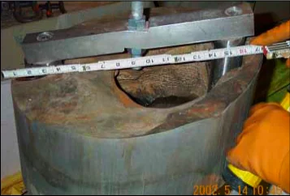
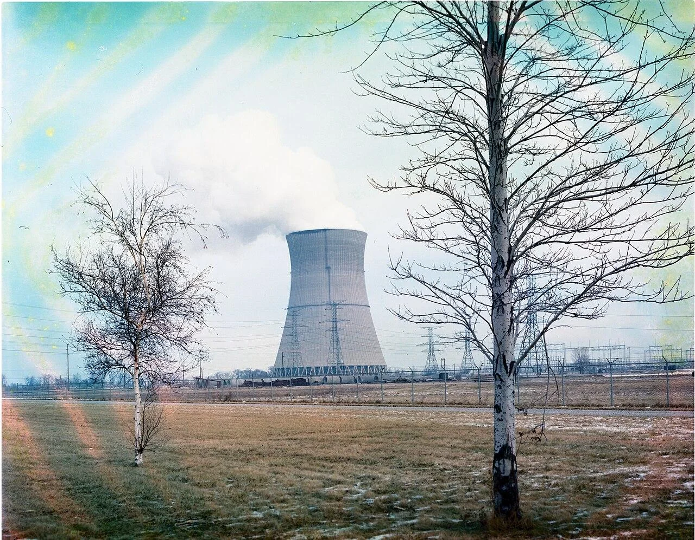
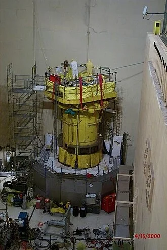
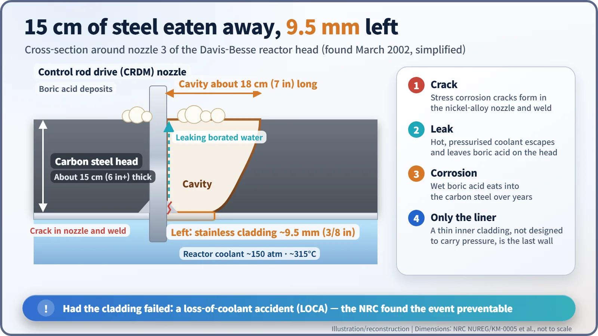
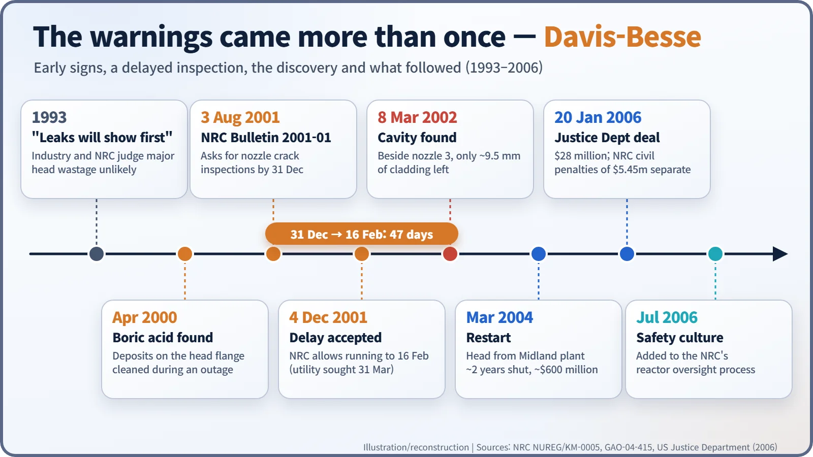

Nuclear History · 270
Football or Pineapple? The 9.5 mm That Held — The Davis-Besse Reactor Head Corrosion (2002)
A delayed inspection, a nozzle that tipped over and a cavity down to the last 3/8 inch of steel turned a high-performing plant into a lesson in safety culture.
In March 2002 workers at the Davis-Besse nuclear plant in Ohio found that boric acid leaking through a cracked control-rod nozzle had eaten right through more than six inches of the carbon-steel reactor head. Only about 9.5 mm (3/8 in) of stainless-steel lining still held back the reactor coolant. Nothing was released, but US auditors called it the most serious safety issue in American commercial nuclear power since Three Mile Island.
Football or pineapple?
Many American reports said the hole was the size of a football. The US Justice Department's press release called it "pineapple-sized". The comparisons disagreed, but the number that mattered was something else: 9.5 millimetres, or 3/8 of an inch. In March 2002, at the Davis-Besse plant in Ohio, that was all that remained where more than six inches (about 15 cm) of steel had vanished from the reactor's lid. A thin stainless-steel liner was holding back reactor coolant at roughly 150 times atmospheric pressure. [1] [4]

A plant in the good years
Davis-Besse is a single-unit pressurised water reactor supplied by Babcock & Wilcox, on the south-western shore of Lake Erie near Oak Harbor, Ohio. It began commercial operation in 1978, and in 2002 it was run by FirstEnergy Nuclear Operating Company (FENOC), a FirstEnergy subsidiary. In the 1990s the American nuclear industry was proud of rising output, and shorter shutdowns were the measure of a well-run plant.
The reactor's lid, or "head", is pierced by 69 tubes, called nozzles, for the mechanisms that move the control rods. The head itself is carbon steel; only its inner face, which touches the coolant, is lined with a thin layer of stainless steel. The nozzles and their welds are made of a nickel alloy, and it had been known since the 1980s and 1990s that such alloys can crack after years in hot reactor water. [1] [4]

Boric acid eats steel quietly
Pressurised water reactors dissolve boric acid in their coolant to fine-tune power, because boron absorbs neutrons. The trouble starts when that water leaks through a crack. On the hot head the water flashes away and leaves white crystals of boric acid behind, and wet boric acid steadily dissolves carbon steel. Stainless steel resists it, but the stainless liner was never meant to carry the pressure. That was the job of the thick carbon steel.
There were warnings. During a refuelling outage in April 2000, boric acid deposits were found on the head flange and cleaned off. Boric acid also built up on the fins of containment air coolers and repeatedly clogged the filters of radiation monitors. Yet in 1993 the industry and the regulator had concluded that a leak would be spotted long before it could seriously damage a head. [1]

A 47-day delay, and a nozzle that tipped
On 3 August 2001 the Nuclear Regulatory Commission (NRC) issued Bulletin 2001-01. Plants judged highly susceptible to nozzle cracking were asked to inspect by 31 December 2001, or to justify running longer. FENOC wanted to wait for its next scheduled outage and run until 31 March 2002. On 4 December 2001 the NRC accepted operation until 16 February 2002, a delay of 47 days. [2]
The outage began on 16 February 2002, and cracks were found in several nozzles. In early March, while workers were repairing nozzle 3, their machining equipment moved oddly. When it was pulled out, the nozzle tipped over until it rested against its neighbour. If the surrounding steel had been sound, it would have held the nozzle in place. On 8 March, after the boric acid deposits were cleared away, a large cavity came into view: about 7 inches (18 cm) long and 4 to 5 inches (10 to 13 cm) wide. The carbon steel was gone all the way through. What remained was about 9.5 mm of stainless-steel cladding. [1]

How close was it?
Had that liner failed, the result would have been a loss-of-coolant accident (LOCA), forcing the plant's emergency cooling systems into action. An NRC risk analysis put the probability of core damage over the preceding year at roughly 6 in 1,000, and the event was rated Level 3, a "serious incident", on the International Nuclear and Radiological Event Scale (INES). No radioactivity was released. In 2004 the US Government Accountability Office (GAO) wrote: "In March 2002, the most serious safety issue confronting the nation's commercial nuclear power industry since Three Mile Island in 1979 was identified at the Davis-Besse plant in Ohio." [3]
Deeper than the hole
The NRC's Lessons Learned Task Force reached a blunt verdict: the event was preventable. The utility had failed to give safety issues appropriate attention; the NRC, the plant and the wider industry had not properly reviewed and followed up operating experience; and the NRC had failed to fold the information it already had into its assessment of the plant. The NRC also acknowledged that it had never documented its reasons for accepting the inspection delay at the time. [1] [2]
The plant bought the head of the unfinished Midland nuclear plant in Michigan as a replacement and, after about two years, restarted in March 2004. Repairs and upgrades are reported to have cost around $600 million. The NRC imposed civil penalties of $5.45 million. In January 2006 FENOC entered a deferred prosecution agreement with the Justice Department, paying $28 million and admitting that the government could prove its employees had knowingly made false representations to the NRC. Two former employees and a former contractor were indicted; two were convicted and one was acquitted. [1] [4] [5]

Safety culture becomes a regulator's business
The rules changed too. A 2003 NRC order required every susceptible plant to inspect the head surface visually and to examine the nozzles for cracks before they leak, requirements later built into the code of the American Society of Mechanical Engineers (ASME). Following GAO's recommendation, from July 2006 the NRC's reactor oversight process explicitly assessed "safety culture", which the NRC defines as ensuring that "nuclear plant safety issues receive the attention warranted by their significance." It was the lesson of a 9.5 mm last barrier, learned at a time when performance had never looked better. [1] [3]